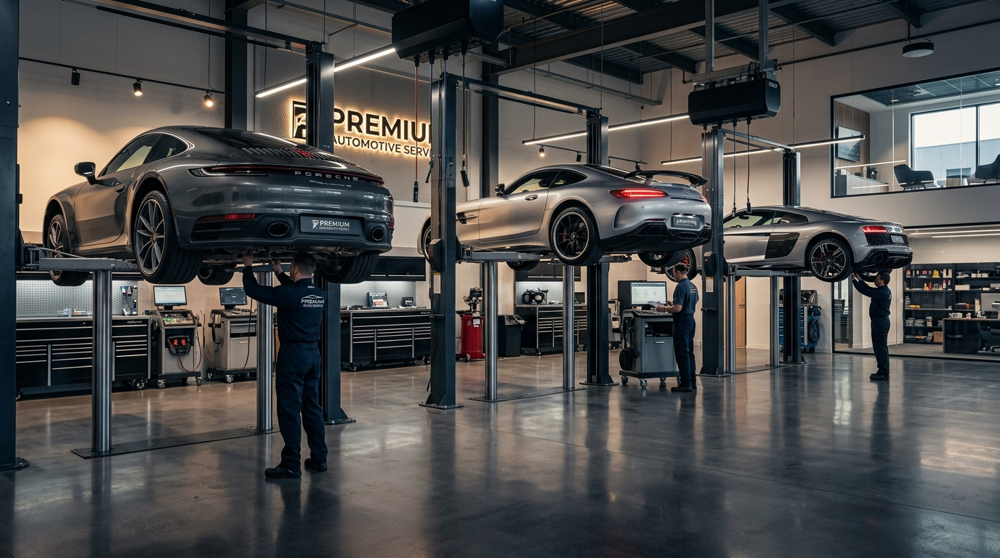
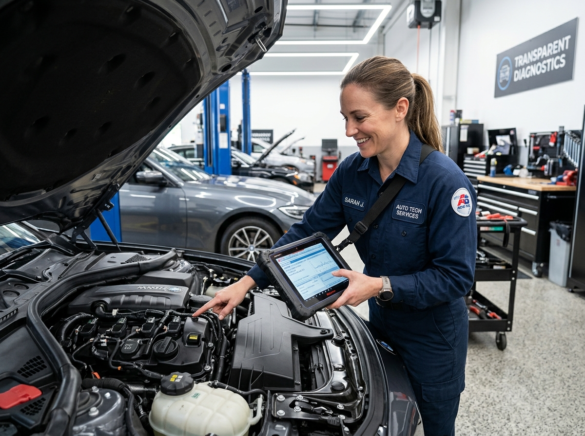
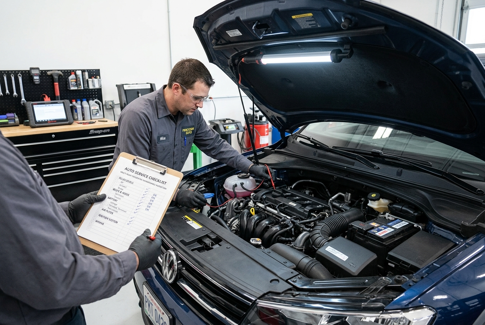
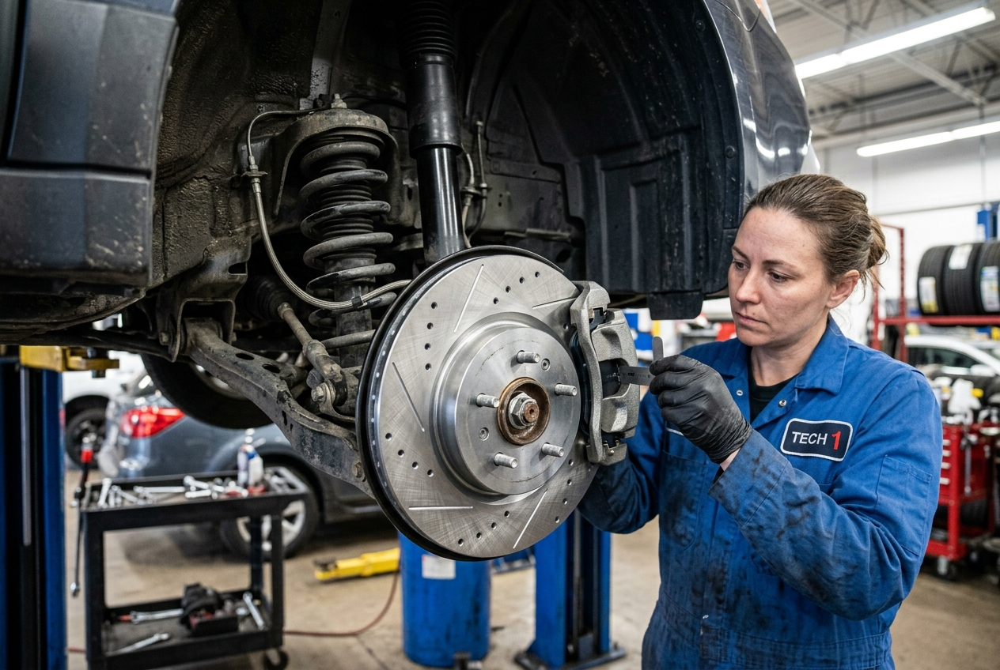
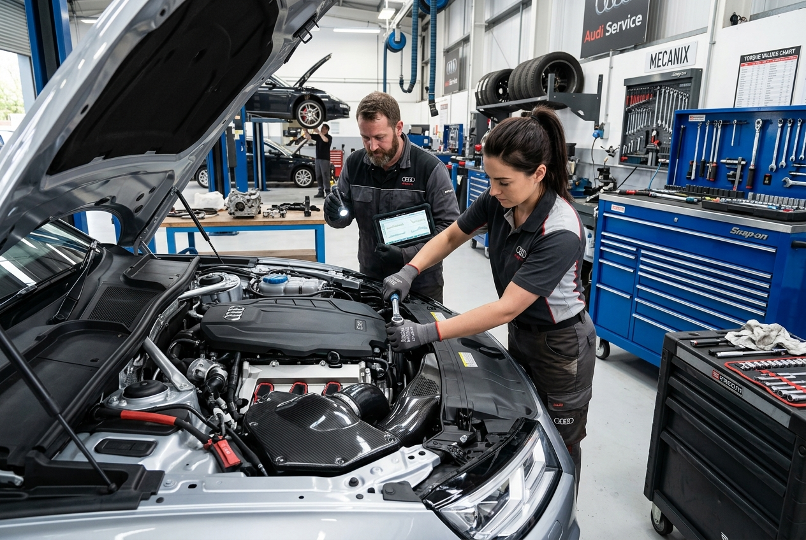
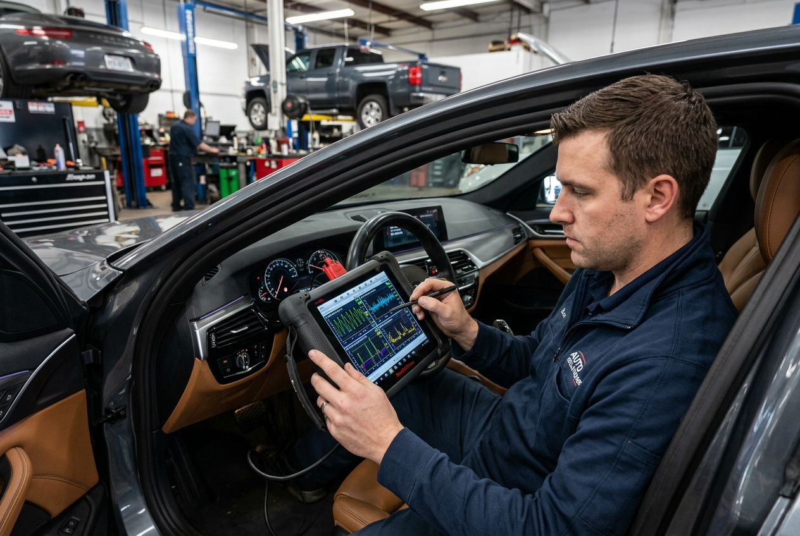
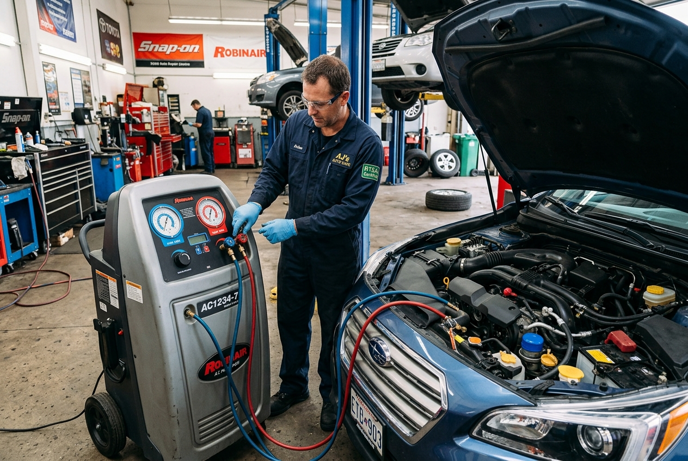
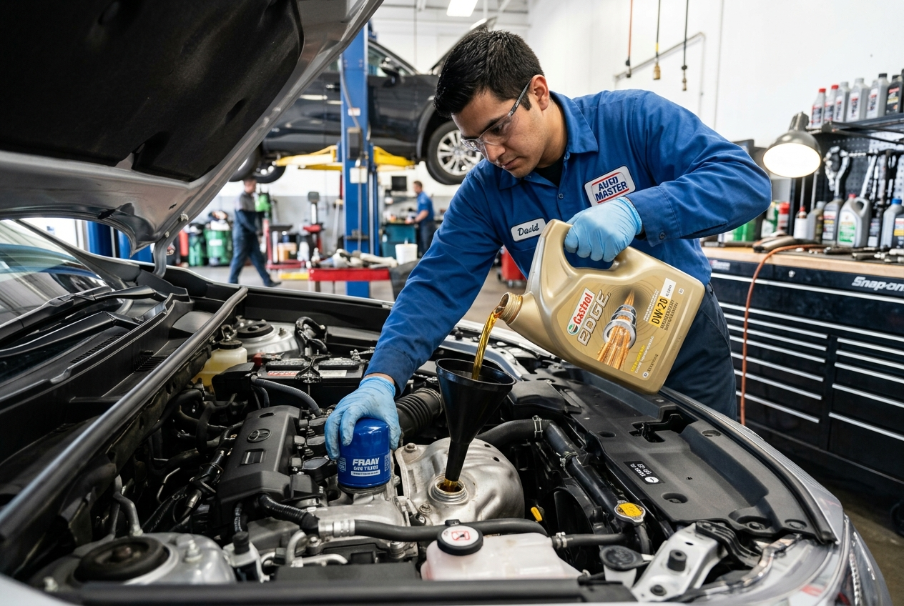

Oficina Mecânica em Serafina Corrêa
Seu carro precisa de manutenção, mas você quer saber exatamente o que precisa ser feito antes de gastar? Conte com uma oficina mecânica em Serafina Corrêa que prioriza diagnóstico claro, orçamento transparente e serviço realizado com responsabilidade.
Diagnóstico antes do reparo para você tomar uma decisão com mais segurança.
Entenda o problema antes de autorizar qualquer reparo.
Saiba o que precisa ser feito antes da execução do serviço.
Cada reparo é realizado com atenção à segurança e ao funcionamento do veículo.
Você recebe informações para entender o que realmente precisa ser feito.

Compromisso e Ética
Comunicação clara e diagnóstico assertivo desde o primeiro contato.
Uma oficina mecânica focada em clareza e responsabilidade
Cuidar do seu carro não precisa significar ficar na dúvida sobre o problema, o preço ou a necessidade de trocar uma peça. Nosso atendimento é baseado em diagnóstico claro e comunicação transparente desde o primeiro contato.
Atendemos motoristas de Serafina Corrêa e regiões próximas que precisam de manutenção, revisão ou conserto de carros, sempre buscando explicar o serviço necessário antes de qualquer reparo.
A proposta é simples: identificar o problema, apresentar o que precisa ser feito e realizar o serviço com responsabilidade e atenção à segurança do veículo.
Serviços de manutenção e reparo automotivo
Do cuidado preventivo aos reparos necessários, oferecemos serviços para diferentes necessidades de manutenção do seu veículo.

Revisão e manutenção preventiva
A manutenção preventiva ajuda a identificar possíveis problemas antes que eles se tornem maiores. Faça a revisão dos principais componentes do veículo e mantenha seu carro em boas condições de uso.

Freios e suspensão
Freios e suspensão estão diretamente relacionados à segurança e ao comportamento do veículo. Realizamos inspeção, manutenção e reparos conforme a necessidade identificada no diagnóstico.

Diagnóstico e reparo do motor
Ruídos, falhas, perda de desempenho ou funcionamento irregular podem indicar problemas no motor. O diagnóstico ajuda a identificar a origem da falha e direcionar o reparo necessário.

Diagnóstico eletrônico
Falhas eletrônicas podem afetar diferentes sistemas do veículo. O diagnóstico eletrônico auxilia na identificação de anomalias e na busca pela origem do problema.

Ar-condicionado automotivo
Seu ar-condicionado não está funcionando como deveria? Realizamos diagnóstico e manutenção do sistema para identificar o que precisa ser verificado ou reparado.

Troca de óleo e filtros
A troca de óleo e filtros faz parte da manutenção básica do veículo e contribui para o bom funcionamento do motor. O serviço é realizado conforme as necessidades e especificações do veículo.
Não sabe qual serviço seu carro precisa?
Explique o que está acontecendo pelo WhatsApp e converse conosco sobre a melhor forma de avaliar o veículo.
Por que escolher nossa oficina mecânica?
Diagnóstico antes do reparo
Antes de realizar o serviço, buscamos identificar o problema para que você saiba o que está acontecendo com o veículo.
Orçamento transparente
Você recebe informações sobre o serviço necessário antes da execução, evitando surpresas e ajudando na sua decisão.
Nada de troca sem necessidade
A orientação é baseada no que o veículo realmente apresenta. O objetivo é esclarecer quais componentes precisam de atenção.
Comunicação clara
Explicamos o problema e o serviço de forma acessível, sem complicar o que precisa ser entendido.
Responsabilidade em cada serviço
Cada reparo exige atenção aos detalhes e aos componentes envolvidos. O serviço é realizado com foco em responsabilidade e segurança.
Mais segurança para decidir
Você não precisa autorizar um reparo sem entender o motivo. Nossa abordagem busca deixar você mais informado sobre o estado do seu veículo.
Como funciona nosso atendimento
Quer fazer um conserto de carro, mas não sabe exatamente qual é o problema? O atendimento segue uma sequência simples para reduzir dúvidas antes do reparo.
1. Converse conosco
Entre em contato pelo WhatsApp e explique o que está acontecendo com seu veículo.
2. Avaliamos o problema
O veículo é avaliado para identificar possíveis falhas e entender o que precisa de atenção.
3. Você recebe as informações
Explicamos o problema identificado e quais serviços ou componentes precisam ser considerados.
4. Orçamento e aprovação
Antes do reparo, você recebe as informações necessárias para decidir como deseja prosseguir.
5. Realização do serviço
Após a aprovação, o serviço necessário é realizado com responsabilidade e atenção ao veículo.
O que nossos clientes dizem
Neste momento, a oficina ainda não possui depoimentos de clientes publicados para apresentar nesta seção.
Em vez de criar avaliações fictícias, esta área será utilizada futuramente para apresentar depoimentos reais de clientes, mantendo a comunicação transparente.
Oficina mecânica em Serafina Corrêa e regiões próximas
Atendemos clientes que procuram serviços de manutenção e conserto de carros em Serafina Corrêa e regiões próximas.
A oficina está localizada no Centro de Serafina Corrêa, facilitando o acesso para quem precisa realizar uma revisão, investigar uma falha ou buscar manutenção para seu veículo.
Rua São Cristóvão, 55, Sala 01, Centro, Serafina Corrêa - RS
Segunda a sexta, das 08:30 às 12:00 e das 13:30 às 18:00
(54) 98123-9392
Perguntas frequentes sobre oficina mecânica em Serafina Corrêa
Seu carro precisa de manutenção?
Não deixe uma falha ou dúvida sobre o veículo evoluir sem avaliação. Entre em contato pelo WhatsApp e explique o que está acontecendo para receber orientação sobre o atendimento.
Atendimento
Segunda a sexta, das 08:30 às 12:00 e das 13:30 às 18:00
Endereço
Rua São Cristóvão, 55, Sala 01, Centro, Serafina Corrêa - RS
(54) 98123-9392